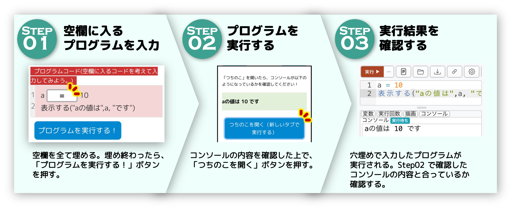

情報の教室
情報の教室
プログラミングや情報のスキルを楽しく学ぼう！
サービス一覧
実プロ
実際に動かせる プログラミング学習ができるサービスです。
外部サービス一覧
ココナラ
個別Web授業を受けたい人向け。マンツーマン指導を行います！
YouTube
情報Iに関する楽しいコンテンツや解説動画を公開しています！
X(旧 Twitter)
「情報の教室」に関するお知らせなどを呟いたりします。
Tweets by johonokyoshitsunote
オリジナル問題や、情報Iに関連した楽しいコンテンツなどを公開しています。